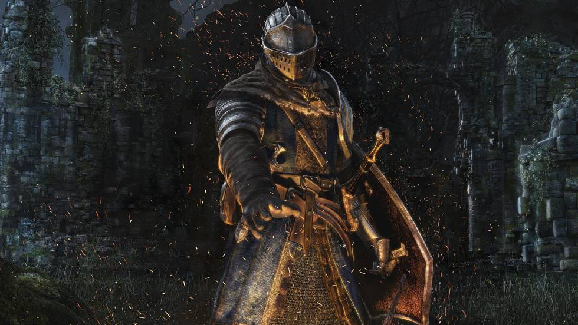
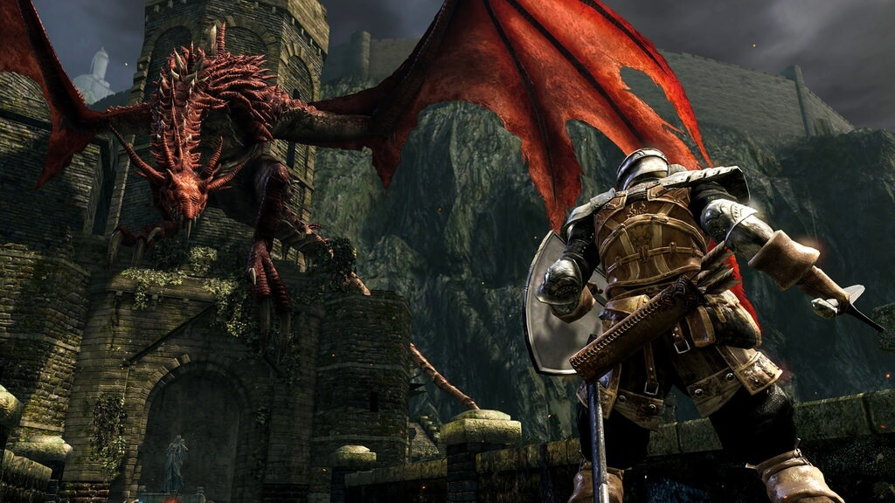
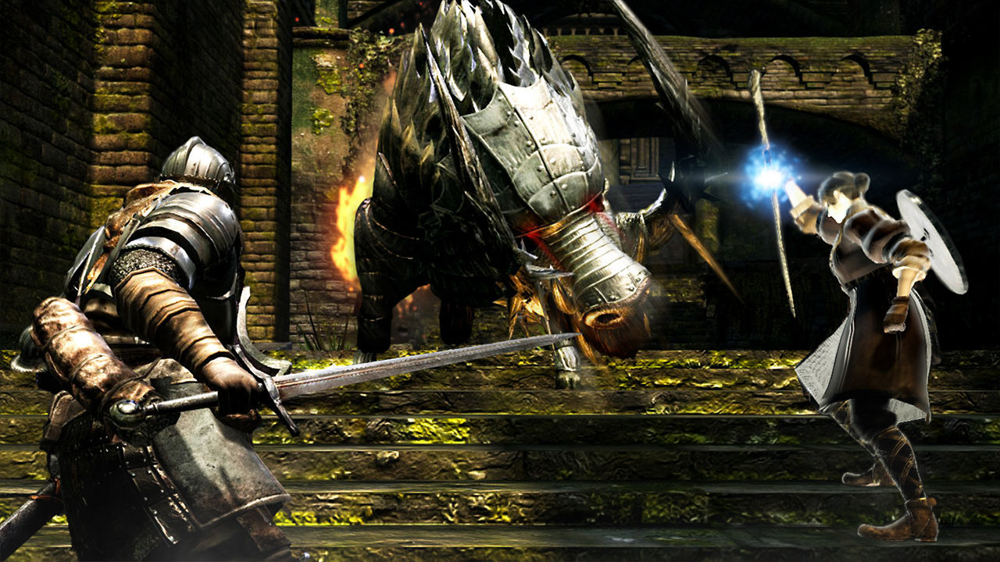
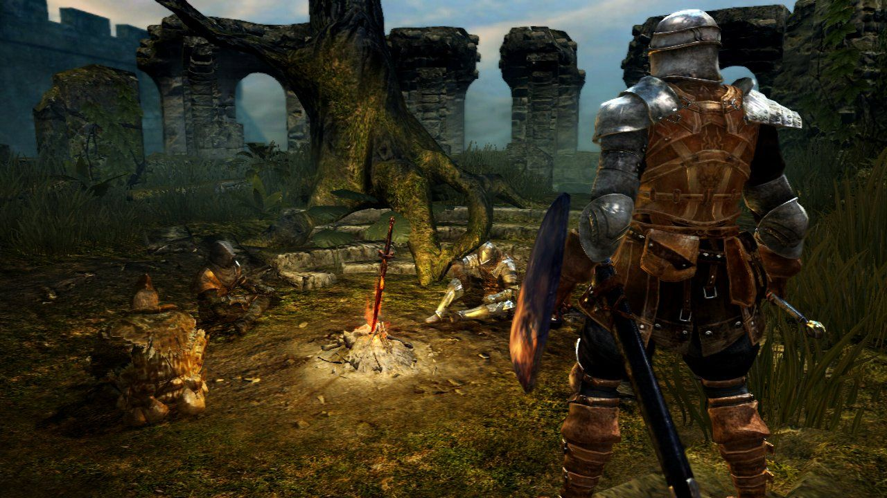
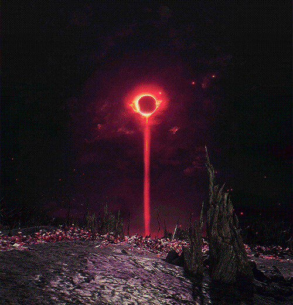

¿Qué hace a Dark Souls tan especial?
Dark Souls es un juego de acción, aventura y fantasía. A simple vista, se nos presenta en el mercado como un juego más, una pequeña estrella que, aunque aparente brillar con menor intensidad que el resto, que puede ser eclipsada y ocultada con facilidad frente al resto de sus compañeras, no es sino una de las más lejanas al ojo humano. En efecto, Dark Souls no es un juego cuya grandeza pueda experimentarse a simple vista, ni siquiera podemos comprender la mayor parte de su historia al empezar. Todo va llegando poco a poco, empujándonos a conocer, a sobrevivir al desafío que nos ofrece, a plantearnos preguntas de carácter universal tales como: “¿Por qué yo, de entre todos?” o “¿Cuál es mi misión en este mundo?”, a medida que evolucionamos, conociéndonos mejor a nosotros mismos y a todo cuanto nos rodea.
El inicio de una peregrinación hacia el ser
Nuestros comienzos en un lugar devastado marcan los primeros pasos de la aventura. Toda nuestra existencia ha estado ligada a este lugar de muerte, alejado de la mano de Dios y, por obra del destino, un NPC del que incluso desconocemos su nombre, nos arroja la llave que nos abrirá el camino hasta un mundo incierto, para el que nadie nos ha preparado, del cual lo desconocemos todo. Sólo una profecía que sale de sus labios momentos antes de morir nos incita a avanzar. Es la primera motivación intrínseca que recibimos: La posibilidad de descubrir nuestro destino. Dark Souls es un juego inmersivo. En definitiva, hemos podido comprobar como posee innumerables puntos a tratar: Lore oculto, motivaciones personales, personajes realistas y humanizados, secretos, teorías, dificultad…Pero ahora, me gustaría centrarme un poco en el trasfondo que propone y discutir acerca de cómo este videojuego, que a simple vista puede parecer casual, desafiante y divertido, se podría volver más que constructivo para la sociedad en la que vivimos si tan sólo pudiésemos obtener de él una cuarta parte de lo que nos ofrece. Así mismo, repasaremos la historia del videojuego.
Trasfondo filosófico

Es curioso como ambas historias trascienden con tanta similitud. Y con ambas, me refiero a la historia del ser humano, y a la historia de Dark Souls. Como hemos visto antes, el lore de Dark Souls es de libre interpretación, pero creo que ésta es una de las cosas que hacen bonito a un videojuego: El poder sacar tus propias conclusiones, el ver el mundo de una forma subjetiva y mágica al mismo tiempo; algo que sólo el verdadero arte puede expresar.
Hipocresía, deshumanización y progreso

En el universo de Dark Souls sería extraño que sólo existiese la raza humana. Desde el principio de los tiempos, multitud de seres inteligentes poblaban la tierra, que se encontraba en completa oscuridad. Con el tiempo, una gran llama despertó al mundo de la oscuridad. Era una llama como ninguna otra: La llama original. Esta llama les dio poder a las almas de 4 seres, los cuales a partir de entonces se pasarán a llamar Dioses; así fue como comenzó la “era de la luz”, una etapa en la que los Dioses reinaban y decidían el destino del resto de seres.
Estos Dioses fueron bendecidos con tales poderes, que decidieron comenzar una guerra contra una de las razas que poblaban la Tierra: Los dragones eternos e inmortales. Gracias a la traición de uno de los hermanos de éstos (Seath, con el título de “El descamado”, pues había nacido ciego y sin escamas, por lo que no gozaba de la inmortalidad de sus hermanos), los Dioses pudieron hacer frente a los dragones, pues conocieron todos sus puntos débiles. Tras ganar la guerra, el resto de seres acabaron poblando la Tierra y reinando sobre ella.
Sin embargo, la codicia de estos Dioses no tenía fin, hecho que se comprobó cuando, al comenzar a apagarse la primera llama original, buscaron la manera de mantenerla encendida por más tiempo, de alterar el orden natural de las cosas, lo cual desembocó en un caos. Ahora, si volvemos a nuestra realidad y nos remontamos unos cuantos de miles de años, podemos observar una situación similar: Desde el descubrimiento del fuego, el ser humano se volvió más inteligente, un Dios en la Tierra, que le permitió reinar y dominar sobre el resto de seres vivos de la ésta. Con el paso del tiempo, nos damos cuenta de que nuestra codicia sigue sin tener fin: Nunca tenemos suficiente, siempre deseamos más y más, aunque eso suponga dañar no sólo a cientos de miles de millones de seres vivos, mostrando una actitud totalmente despótica, sino a nuestra propia raza. ¿Estamos los seres humanos deshumanizados? Es una de las grandes preguntas que podemos realizarnos tras jugar a Dark Souls. ¿Dónde está la humanidad que hoy día nos “caracteriza”? Hablamos de ser los “protectores de la vida”, pero jugamos con ella como si de plástico se tratase, y mientras lo hacemos, miles de personas sufren porque podamos hacerlo, es decir, tengamos un modelo económico superior al suyo. Nos hemos vuelto un “Seath el descamado”, al que no le importó vender a sus hermanos con el fin de progresar en busca de su inmortalidad.
Nos negamos a llamarnos “Dioses” porque sería un título demasiado soberbio, pero nos encontramos en nuestra propia Era de la luz, y buscamos extenderla sin ningún límite. La pregunta que debemos plantearnos en referencia a esto es: ¿Cuándo llegarán nuestros propios No Muertos a traer la era de la oscuridad a nuestro mundo?
Moralidad y etnocentrismo

La moralidad en Dark Souls es algo realmente curioso, pues desde el principio del juego nos encontramos con diferentes opiniones acerca del destino del no muerto, por lo que, necesariamente no todas podían ser ciertas. Es decir, nos mienten desde que empezamos hasta que completamos el juego. Pasamos por muchas mentiras y traiciones, todas ellas de distintos npcs. Sin embargo y hasta el final, podíamos intentar desmenuzar todos los engaños gracias a nuestra inteligencia; o caer como ilusos e ir madurando. Justo como en la vida misma.
Otro error frecuente al iniciar el juego es pensar en la era de la luz y en la de oscuridad atribuyéndoles connotaciones positivas y negativas respectivamente, al igual que a los Dioses y a los dragones. ¿Son los Dioses buenos o malos? ¿Y los dragones? Todos ellos, desde el más pequeño al más grande, son almas cargadas de propósitos e intereses. La pluralidad de culturas que encontramos dentro del juego es bastante amplia, por no decir que encontramos seres que, por causas de la vida, han resultado en ser más o menos despiadados. Lo que vengo a contar con esto es, que todos ellos se regían por su propia estabilidad, buscando siempre el beneficio máximo para ellos mismos y sus compañeros más cercanos. La era de luz y oscuridad no son sino partes de un continuo fluir, en el que cada vestigio de vida tiene una parte de razón, una razón que a menudo desacreditamos simplemente por no tener un poco de empatía por el resto de seres vivos, o incluso de humanos.
Conclusión
En conclusión, Dark Souls es una obra cargada de contenido psicológico y filosófico, de la cual podemos obtener nuevas maneras de entender nuestro propio mundo. Además, podemos observar como la psicología motivacional juega un papel fundamental durante todo el transcurso del juego, pudiendo así generar una experiencia más interesante y creativa, que pueda desembocar en la madurez y realización a nivel personal.
